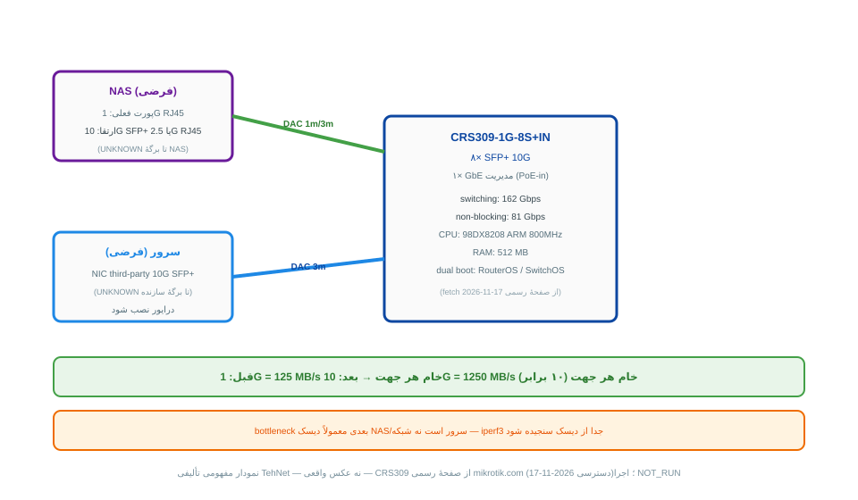

وضعیت درس: DRAFT / NOT_DEPLOYED — در انتظار مرور. (درس مصوب سرفصل S6: ارتقای NAS/سرور 2.5G/10G)
آموزش تصویری از سری switching؛ مخاطب: مدیر IT/کارشناس شبکه.
سناریوی کاملاً فرضی و آموزشی با دادهٔ ساختگی؛ هیچ شبکهٔ واقعی دستکاری نشده و هیچ اجرای واقعی NOT_RUN است.
نمودار مفهومی و تألیفی است (نه عکس واقعی).
ارتقا سه بخش دارد: سوئیچ با پورت 10G (مثل CRS309 با ۸×SFP+)، NIC سرور (کارت شبکهٔ SFP+ در سرور/NAS) و کابل/ماژول بین آن دو (DAC برای رک، فیبر برای فاصله). کارت شبکهٔ سمت سرور خارج از تولید MikroTik است — مدل/درایور را از سازندهٔ کارت تأیید کنید. 2.5G مسی (2.5GBASE-T) مسیر میانی برای Cat5e+ است؛ 10G مسی روی Cat6a/7 سندشده تا 30m ولی روی Cat5e تضمینی ندارد. قبل از خرید: NIC و سوئیچ و ماژول باید هماستاندارد باشند.
| بند | مقدار فرضی |
|---|---|
| سوئیچ 10G | CRS309-1G-8S+IN — ۸×SFP+ (تا 10G هر پورت) + ۱×GbE مدیریت (PoE-in) |
| ظرفیت سند رسمی | switching capacity 162 Gbps · non-blocking 81 Gbps (L2 64B: 61,714 Mbps) |
| CPU/چیپ | 98DX8208 ARM 32bit 800MHz دوهسته — 512MB RAM |
| NAS | NAS فرضی با پورت 1G موجود؛ ارتقا به 10G SFP+ |
| سرور | سرور فرضی با کارت 10G SFP+ (NIC third-party — سازنده/مدل را از برگهٔ سازنده کارت تأیید کنید؛ UNKNOWN تا برگه) |
| کابل اولیه | DAC 1m (S+DA0001) — رکبهرک؛ Discontinued → جایگزین DAC 3m از جدول سازگاری |
| سناریوی demand | backup شبانه + دسترسی فایل همزمان چند کاربر → نیاز به >1G توجیهپذیر |
| اجرای واقعی | NOT_RUN — دستورها الگوی سند RouterOS؛ سختافزار فرضی |
backup شبانه: 2TB × ۸ ساعت = ~70 MB/s متوسط — 1G (125 MB/s خام) مرزی
فایلسرور همزمان: ۵ کاربر × 20-40 MB/s پیک = 100-200 MB/s — با backup جمع میشود
دوربینهای سنگین: ۲ دوربین × 25 Mbps = 50 Mbps — جزئی
نتیجه: backup + فایلسروری همزمان > 1G خام → ارتقا به 10G توجیهپذیراعداد بالا فرض سناریواند؛ اندازهگیری واقعی از مانیتورینگ (الگوی N2) ملاک نهایی است.
| بخش | انتخاب | نکتهٔ سندشده |
|---|---|---|
| سوئیچ 10G | CRS309 (۸×SFP+، 162 Gbps switching، 81 Gbps non-blocking) | تنها یک پورت GbE مدیریتی دارد — مدیریت از آن یا از LAN موجود |
| NIC سرور | کارت 10G SFP+ third-party (مثل Intel X710، Mellanox ConnectX-4) | خارج از تولید MikroTik — سازگاری از برگهٔ سازنده کارت؛ UNKNOWN تا برگه |
| کابل/ماژول | DAC رکبهرک (الگوی S3) یا فیبر مالتیمود برای فاصلههای بیشتر | S+DA0001 Discontinued → جایگزین DAC 3m از جدول سازگاری |

شرح متنی نمودار (جایگزین تصویر برای دسترسپذیری): NAS و سرور با کابل DAC مستقیم به سوئیچ CRS309 وصل شدهاند که هشت پورت SFP+ ده گیگابیت دارد. سوئیچ ظرفیت سوئیچینگ ۱۶۲ گیگابیت و throughput ۸۱ گیگابیت دارد. سرعت قبل ارتقا ۱۲۵ مگابایت بر ثانیه و بعد ارتقا ۱۲۵۰ مگابایت بر ثانیه. تلهٔ بعدی دیسک است نه شبکه. برچسب «تألیفی/مفهومی».
| گام | عمل | انتظار |
|---|---|---|
| ۱ | سوئیچ CRS309 را رک کنید؛ مدیریت از پورت GbE موجود | سوئیچ بالا آمده و از LAN مدیریتپذیر است |
| ۲ | NIC 10G را در سرور نصب و درایور سازندهٔ کارت را نصب کنید | لینک با DAC به CRS309 برقرار |
| ۳ | NAS: پورت 10G را وصل کنید (DAC دوم از CRS309) | لینک 10G در هر دو |
| ۴ | تست پهنایباند: iperf3 بین سرور و NAS | نزدیک 10Gbps (محدودیت دیسک/FS جدا) |
| ۵ | آزمون failover: یک کابل DAC را قطع کنید | تونل/لینک دوم یا bonding رک — خارج دامنه این درس، به N4 ارجاع |
شرح متنی نمودار (جایگزین تصویر برای دسترسپذیری): سمت چپ: NAS و سرور با کارتهای 10G SFP+؛ سمت راست: سوئیچ CRS309 با ۸×SFP+؛ بین آنها دو کابل DAC (سبز = مسیر اصلی). یک فلش «قبل: 1G = 125 MB/s» به یک جعبهٔ خاکستری (مدل قبلی) و یک فلش «بعد: 10G = 1250 MB/s» به جعبهٔ سبز؛ برچسب «تألیفی/مفهومی».
| نشانه | علت محتمل | بررسی | راهحل |
|---|---|---|---|
| لینک 10G بالا نمیآید | DAC یا ماژول با پورت ناهمخوان | مدل پورت (SFP+ 10G) و مدل کابل/ماژول را چک کنید | کابل/ماژول سازگار (S3) |
| سرعت فقط 1G | ماژول 1G در پورت 10G نصب شده | `/interface ethernet monitor sfp-sfpplus1` | ماژول 10G (S+DA0001/S+85DLC03D) |
| سرعت بالا ولی دیسک bottleneck | دیسک NAS/سرور از 10G کندتر | iperf3 جدا از دیسک | دیسک جداگانه ارتقا یابد |
| درایور NIC نصب نشده | third-party بدون درایور | `lspci` / Device Manager | درایور از سازندهٔ کارت |
| پیوند | مقصد |
|---|---|
| درسهای مرتبط | S1 سوئیچها · S3 ماژولها · N4 پذیرش |
| نقشهٔ کامل سری | topic map |
| ارتقای سرور/NAS برای سازمان شما | خدمات راهاندازی شبکهٔ تهران |
| پایان خوشهٔ S و M درسهای فرضی؛ درسهای بعدی سری | در topic map ثبت است |